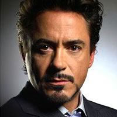
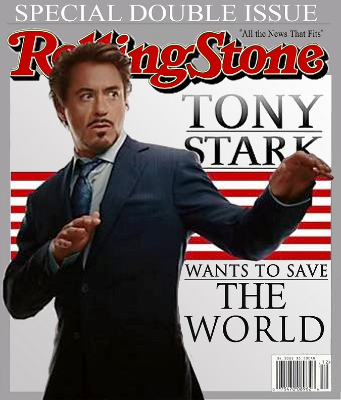
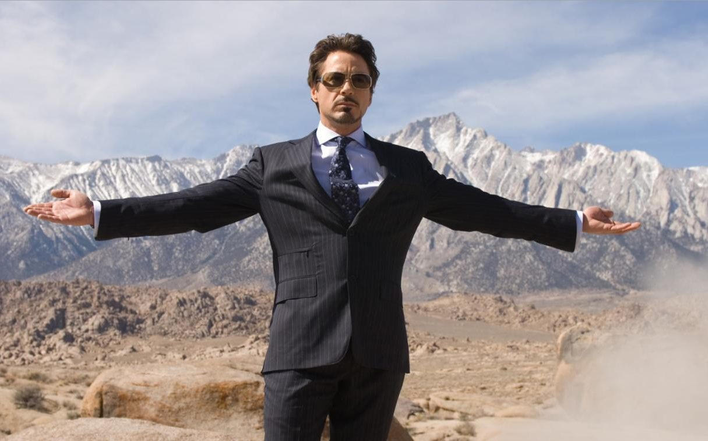

Anthony Edward Stark, the adopted son of wealthy industrialist and head of Stark Industries, Howard Stark, and Maria Stark, was born on Long Island. A boy genius, he enters MIT at the age of 15 to study electrical engineering and later receives master's degrees in electrical engineering and physics. After his parents are killed in a car accident, he inherits his father's company. Tony Stark is injured by a booby trap and captured by enemy forces led by Wong-Chu. Wong-Chu orders Stark to build weapons, but Stark's injuries are dire and shrapnel is moving towards his heart. His fellow prisoner, Ho Yinsen, a Nobel Prize-winning physicist whose work Stark had greatly admired during college, constructs a magnetic chest plate to keep the shrapnel from reaching Stark's heart, keeping him alive. In secret, Stark and Yinsen use the workshop to design and construct a suit of powered armor, which Stark uses to escape. But during the escape attempt, Yinsen sacrifices his life to save Stark's by distracting the enemy as Stark recharges. Stark takes revenge on his kidnappers and heads back to rejoin the American forces, on his way meeting a wounded American Marine fighter pilot, James "Rhodey" Rhodes.

Later on, Stark expands on his armor designs and begins to build his arsenal of specialized armors for particular situations such as for space travel and stealth.Stark develops a serious dependency on alcohol in the "Demon in a Bottle" storyline.The first time it becomes a problem is when Stark discovers that the national security agency S.H.I.E.L.D. has been buying a controlling interest in his company in order to ensure Stark's continued weapons development for them. At the same time, it was revealed that several minor supervillains armed with advanced weapons who had bedeviled Stark throughout his superhero career were in fact in the employ of Stark's business rival, Justin Hammer who began to plague Stark more directly.At one point in Hammer's manipulations, the Iron Man armor is even taken over and used to murder a diplomat.
In an attempt to stop other people from misusing his designs, Stark goes about disabling other armored heroes and villains who are using suits based on the Iron Man technology, the designs of which were stolen by his enemy Spymaster. His quest to destroy all instances of the stolen technology severely hurts his reputation as Iron Man. After attacking and disabling a series of minor villains such as Stilt-Man, he attacks and defeats the government operative known as Stingray. The situation worsens when Stark realizes that Stingray's armor does not incorporate any of his designs. He publicly "fires" Iron Man while covertly pursuing his agenda. He uses the cover story of wanting to help disable the rogue Iron Man to infiltrate and disable the armor of the S.H.I.E.L.D. operatives known as the Mandroids, and disabling the armor of the Guardsmen, in the process allowing some of the villains that they guard to escape. This leads the United States government to declare Iron Man a danger and an outlaw. Iron Man then travels to Russia where he inadvertently causes the death of the Soviet Titanium Man during a fight. Returning to the U.S., he faces an enemy commissioned by the government named Firepower. Unable to defeat him head on, Stark fakes Iron Man's demise, intending to retire the suit permanently. When Firepower goes rogue, Stark creates a new suit, claiming that a new person is in the armor.
